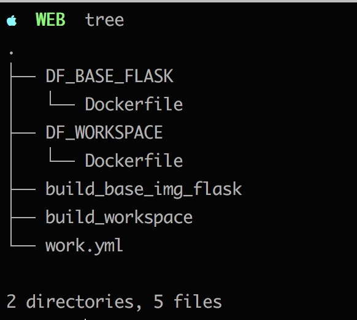
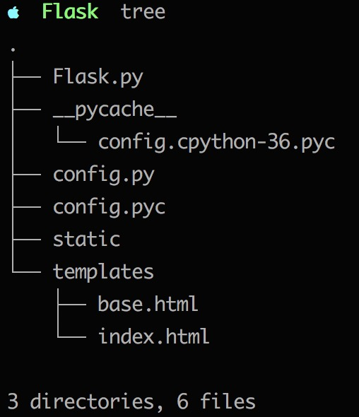
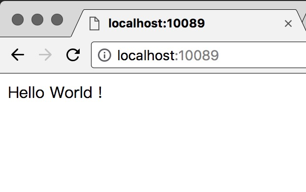

最近刚刚简单学习了Docker和Flask，周末无事，在Docker中简单部署了Flask，记录一下实现方式。
基本思路
[alpine + python3 + flask]
alpine作为基础系统，安装Python3 + Flask。
目录结构

目录对应文件说明
DF_BASE_FLASK [Dockerfile + build_base_img_flask] 生成一个基础的镜像,对应的代码和生成镜像如下:
1 | # Dockerfile |
1 | # build_base_img_flask |
1 | # 镜像 |
work.yml
提供docker compose使用，代码如下：1
2
3
4
5
6
7
8
9
10
11
12# work.yml
version: "1"
services:
sunrian_flask:
image: sunrain/flask_workspace:latest
volumes:
- /dk/Flask:/code
ports:
- "10089:10086"
command: python3 Flask.py
/dk/Flask是我的电脑映射的docker读写目录，文件结构及主要的Flask.py代码如下：

1 | # Flask.py |
DF_WORKSPACE [Dockerfile + build_workspace] 生成一个基于基础镜像的代码目录映射镜像,对应的代码和生成镜像如下:
1 | # Dockerfile |
1 | # build_workspace |
1 | # 镜像 |
最终运行效果如下：

总结
上面的实现过程并不复杂，搭建一个web项目由于使用了docker和python而变得更加简单，一个独立且方便移植的linux+python+flask实现的web项目紧60M左右，让我不得不感叹科技的发展如此之快。